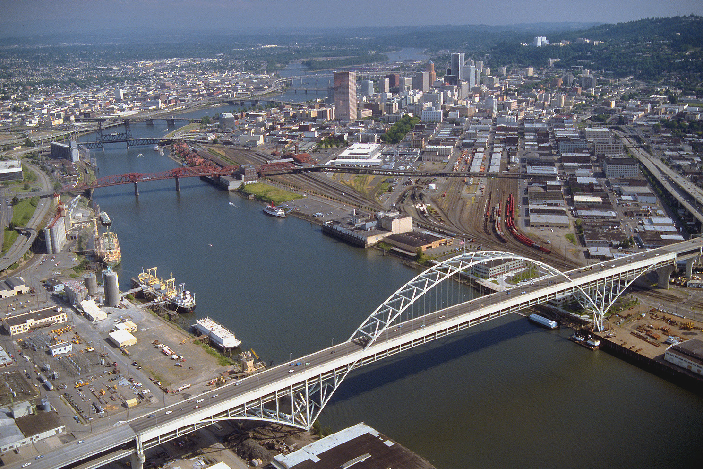
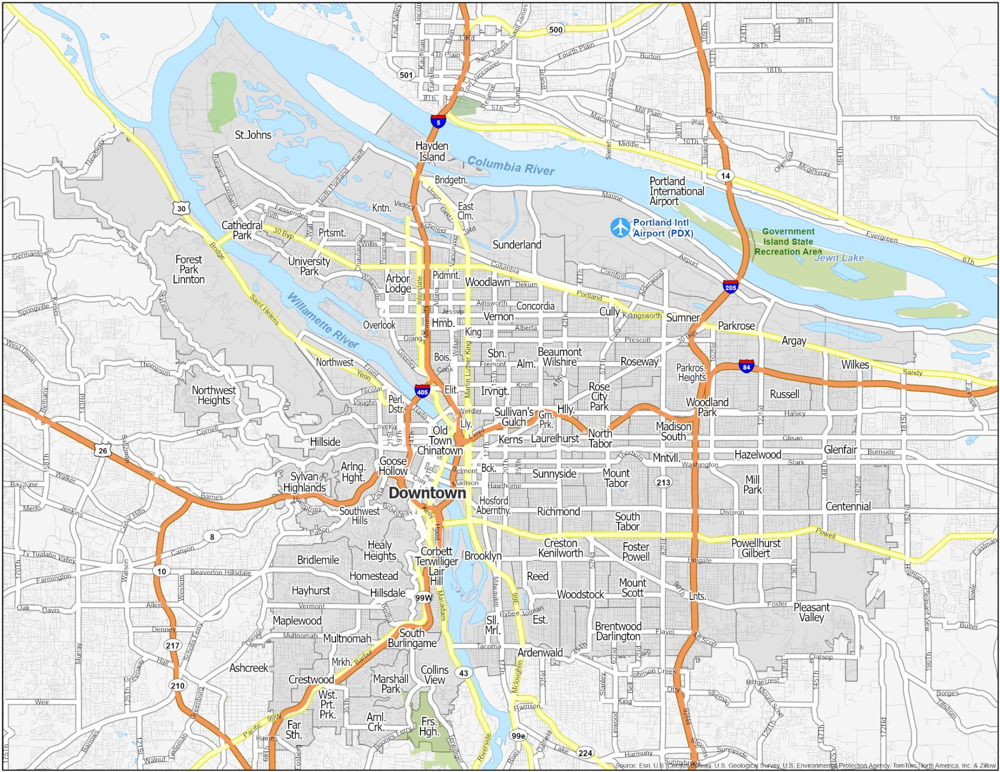

placeholder for welcome note
Hi, my name is Alexander Andu. I am a Senior Retail Media Manager specializing in Amazon Ads, DSP, and advanced analytics. I currently work in digital retail media strategy, where I manage large brand accounts and focus on data-driven decision-making and performance optimization.
placeholder for Comments or reflections about your purpose for engaging in CityLab, your questions and ideas about placemaking and urban livability, and how these questions and ideas relate to your life and career plans.

placeholder for history of waterfront and importance in the community
placeholder for reflections about the water

placeholder for reflection about community and how you choose to explore it